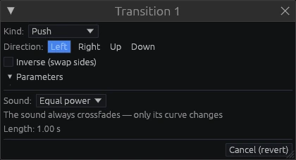

The timeline

Tracks
Video tracks are layers: the top track is drawn over the ones below it. Audio tracks are mixed. Morph tracks hold morphers. Every track has a name (right-click the header → Rename track…), mute, solo and lock, its own effects, opacity and blend mode (the track window, from the same menu). Drag a header to reorder tracks; drag its bottom edge to change its height, right-click the edge to reset it. Shift+wheel scrolls tracks, Ctrl+Shift+wheel changes all track heights.
Events
| Gesture | Result |
|---|---|
| drag the body | move (hold Ctrl to switch the magnet off) |
| drag an edge | trim |
| click / Ctrl+click | select / add to the selection |
| Ctrl+drag on empty space | rubber-band selection |
| double-click | the effects window |
| Shift+double-click | region over this event |
| right-click | the event menu: split, reverse, fades, transitions, sync, link/unlink… |
| drag a top corner | fade in or out at that edge |
| drag the level line | video opacity or audio gain (double-click resets it) |
Linked audio and video move together. The filmstrip and the waveform always show the material that actually plays — slowed, reversed or warped.
When a move is impossible, the obstacle is highlighted in red and the status line says why; if the obstacle is off screen, an arrow points to it.
Transitions

Drag one event over its neighbour to create a crossfade, or use Transition with next / previous in the event menu. Drag a transition's edges to resize it, drag the cut inside it to roll the edit. Double-click it (or Transition properties…) to choose one of 33 kinds and its parameters. The audio side always crossfades; only its curve changes (equal power, linear, S-curve, exponential). A transition with nothing on one side is a fade.
Markers and the region
M toggles a marker at the playhead; drag a marker to move it, right-click to delete it. A range marker spans time and can be turned into the region by double-clicking its band. The region is set by dragging on the ruler, by I/O, or with Shift+double-click on an event. L loops it; the render uses it when it exists.
Navigation and zoom
The wheel scrolls along time, Ctrl+wheel zooms around the mouse. Ctrl+L (or a double-click on the timecode) jumps to a typed timecode. Ctrl+F searches events, markers and media by name. The speed control next to the timecode plays at any rate between −2× and 2×, including a freeze frame at zero; right-click it to type a value.
Next: Effects and automation.